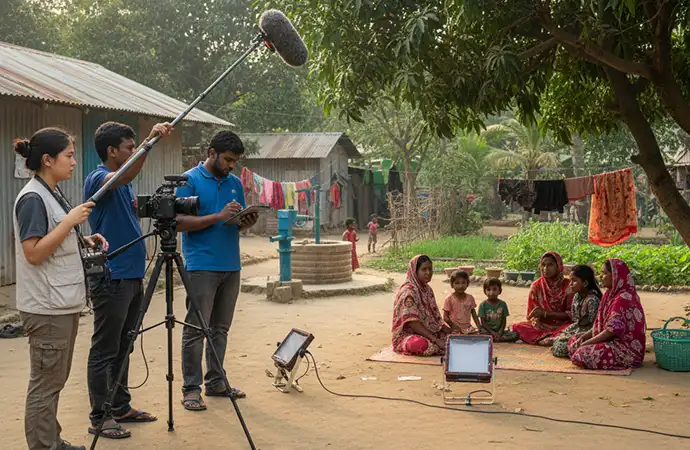
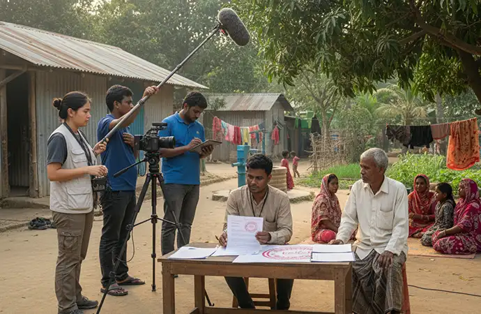
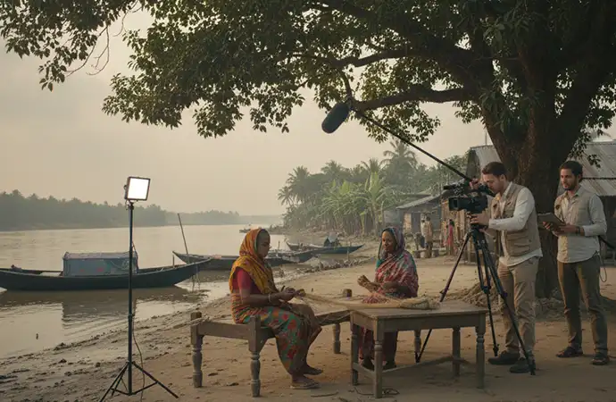
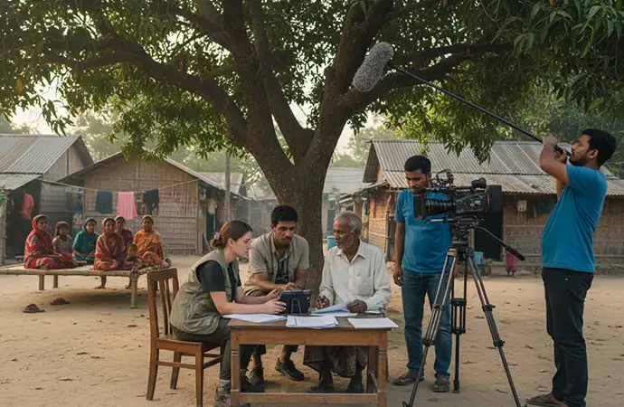
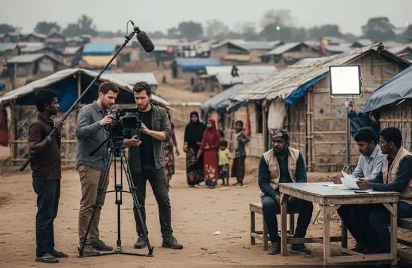

Fantastic team. They took ownership of the project. As a result, they gave very good creative inputs to improve the ad. They also tried hard to reduce the project cost... Read Ehtesham Ahmed's Full ReviewRead More
NGO and Documentary Filming in Bangladesh: What Foreign Teams Should Know
A Practical Guide for International NGOs, Filmmakers, Journalists and Development Organisations
Bangladesh is among the most filmed countries in South Asia for development, humanitarian, climate, labour, migration, and social-impact storytelling. International NGOs and documentary filmmakers regularly work here to document real-world change, challenges, and progress.
However, filming in Bangladesh as a foreign team involves legal, ethical, and operational responsibilities that must be understood before the cameras roll. This guide explains what foreign NGOs and documentary teams should know to film responsibly, legally, and safely.

Why Bangladesh Is a Key Destination for NGO and Documentary Filming
- Global development and humanitarian programmes
- Climate change and environmental storytelling
- Labour, migration and urbanisation narratives
- Public health, education, and social impact initiatives
- Community-driven change stories
These stories require trust, cultural sensitivity, and strong local coordination.

Legal Requirements for NGO and Documentary Filming in Bangladesh
Most professional filming activities by foreign NGOs or documentary teams require prior approval from relevant authorities.
- Documentary filming permits (Ministry of Information — 10 to 21 working days)
- Media or journalist visa clearance (2 to 4 weeks pre-clearance)
- Location-specific permissions (RRRC, Forest Dept, CHT as applicable)
- Special approvals for sensitive topics or regions
Learn more in our Filming Permits in Bangladesh — Step-by-Step Guide .

Ethical Responsibilities When Filming Communities
- Informed consent from participants
- Cultural sensitivity and dignity
- Avoiding exploitation or misrepresentation
- Protection of vulnerable groups
- Responsible storytelling practices
Ethical failures can damage trust, harm communities, and jeopardise future filming access.

Why NGO and Documentary Teams Need a Local Film Fixer
- Authority liaison and legal compliance
- Community access and trusted introductions
- Language and cultural interpretation
- Logistics, transport and scheduling
- Risk management and safety planning
This is why foreign teams rely on Film Fixer Services in Bangladesh and Filming Permits and Visa Guidance .
Common Challenges Foreign Teams Face
- Permit delays and unclear processes
- Access to sensitive or restricted locations
- Language and communication barriers
- Safety, crowd and risk management
- Unrealistic filming schedules

Why NGOs and Documentary Filmmakers Choose Libanza Films
- Extensive experience supporting NGO and documentary projects
- Strong authority and community liaison
- Ethical, compliance-first approach
- Nationwide filming support across all 64 districts
- Integrated fixer, permit, and logistics services
Frequently Asked Questions — NGO and Documentary Filming in Bangladesh
Yes. Most NGO and documentary filming activities require a Ministry of Information filming permit — 10 to 21 working days to process. Additional permits apply for specific locations: Forest Department for the Sundarbans (4 to 6 weeks), RRRC for Rohingya camp access in Cox's Bazar (2 to 3 weeks), and Chittagong Hill Tracts special area permits (6 to 8 weeks). A registered Bangladesh production company must apply on behalf of the foreign team.
No. Filming communities requires fully informed consent from participants in a language they understand, respect for cultural and religious sensitivities, local community leader engagement and ethical storytelling practices that protect participants — especially children and vulnerable groups. Ethical failures damage community trust, harm participants and can result in permit revocation and loss of future filming access.
Bangladesh is generally safe for NGO and documentary filming when projects are well planned, risks are assessed and experienced local fixers manage logistics and authority coordination. Key planning considerations include buffer days for Dhaka traffic, seasonal weather contingencies (monsoon June to September) and obtaining all permits before crew arrival.
A local film fixer manages filming permits (10 to 21 working days through the Ministry of Information), authority coordination, community access, language interpretation, logistics and real-time problem solving. Without a local fixer, foreign NGO teams consistently encounter permit refusals, community access denials and compliance failures. Film fixer support starts from USD 2,000 to 8,000 for fixer-only engagements.
The most common challenges include permit delays due to multiple overlapping authorities, access to sensitive locations such as refugee camps and the Hill Tracts, language and communication barriers in rural environments, crowd and safety management on location, and unrealistic filming schedules that do not account for Dhaka traffic or rural logistics. A local fixer addresses all of these before they become on-set problems.
Yes. Libanza Films provides nationwide NGO and documentary filming support across Bangladesh — Dhaka, Cox's Bazar, Chittagong Hill Tracts, the Sundarbans, Sylhet and all rural regions. Services cover permits, fixer coordination, crew, ethics compliance briefing, logistics and equipment. Libanza Films has directly supported NGO and development sector productions for international clients from the USA, UK, Belgium, UAE, France and India.

About the Author
Azizul Hoque Shiplu
Founder and Film Director of Libanza Films. Azizul has worked in commercial film production and advertising since 2007, beginning his career at Ogilvy and Mather and training at the Zahir Raihan Film Institute. He has managed NGO and documentary filming support for international organisations across Bangladesh — including INGO productions for organisations working in Cox's Bazar humanitarian zones, rural development programmes and climate storytelling projects. The legal requirements, ethical obligations and operational challenges described in this guide reflect direct experience managing NGO and documentary productions in Bangladesh.
Related Reading
- Film Fixer in Bangladesh — National Coverage and Pricing
- Film Fixer in Cox's Bazar — RRRC Permits and Rohingya Camp Access
- Film Fixer in Dhaka — Permits, Community Access and Logistics
- Film Fixer in Sundarbans — Forest Permits and Boat Logistics
- Film Fixer in Chittagong — Hill Tracts Access and Port Filming
- Film Fixer in Sylhet — Tea Estates, Haor Wetlands and Rural Access
- Filming Permits and Media Visa Guidance in Bangladesh
- NGO Video Production in Bangladesh — Libanza Films
- Filming Permits in Bangladesh Explained: Step-by-Step Guide for Foreign Crews
- Cox's Bazar as a Filming Destination: Complete Guide for Foreign Crews (2026)
- What Is a Film Fixer? A Guide for International Productions Filming in Bangladesh
- How to Hire a Film Fixer in Bangladesh: What to Look For and What to Avoid
- How Much Does a Film Fixer Cost in Bangladesh? (2026 Guide)
- International Production Support in Bangladesh: What Foreign Production Companies Need to Know
- Film Locations in Bangladesh: A Director's Guide for International Productions
Customer Reviews

Very dedicated team! Apprecite their enthusiasm, creativity and passion for their work... Read Md. Jamil Hossain Chowdhury Rahat's Full ReviewRead More

Libanza specializes in creating captivating films and advertisements with compelling narratives and stunning visuals... Read Riad Full ReviewRead More
Get in Touch
Our Clients
Diverse industries, trusted partnerships. From advertising agencies to corporate entities and non-profit organizations, our clients rely on us to bring their creative visions to life. With passion, expertise, and attention to detail, we deliver exceptional video production solutions that exceed expectations. Join our esteemed clientele and experience the power of captivating storytelling with Libanza Films.